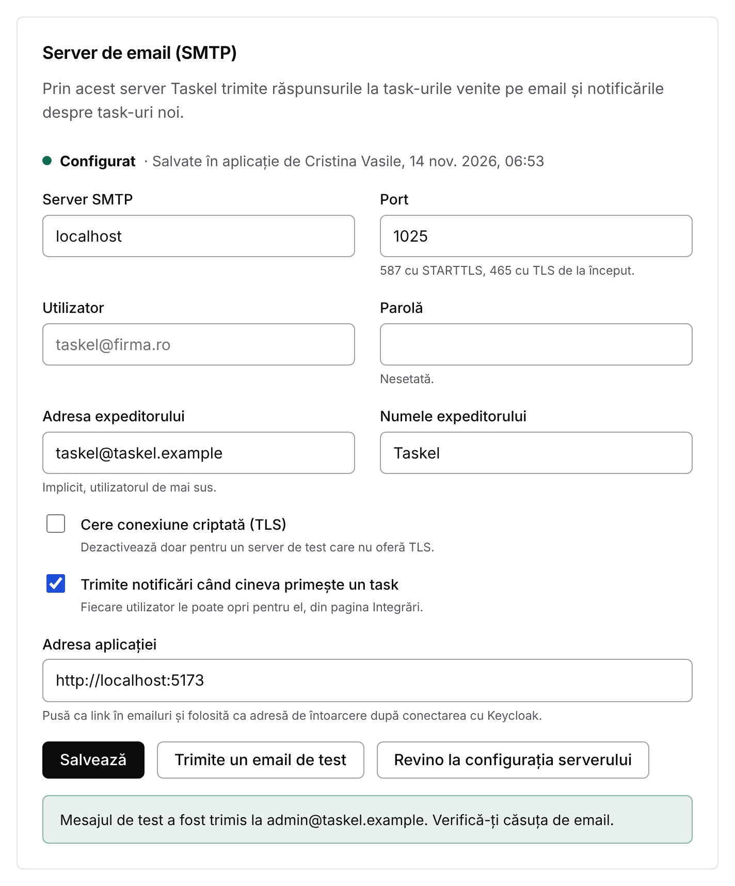
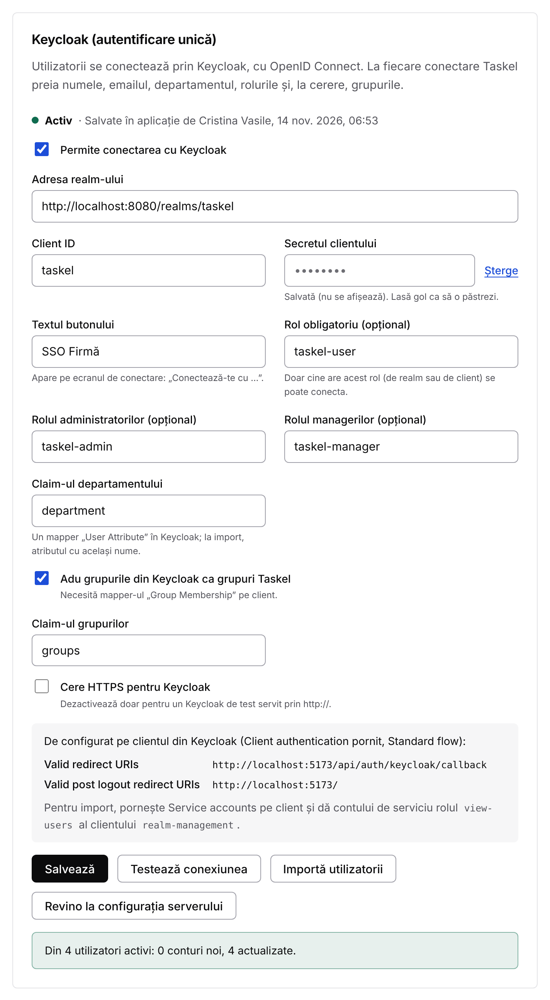

Instalarea pe un server Linux, configurarea, legarea la email, Active Directory și Keycloak, copiile de siguranță și actualizarea.
Taskel are trei părți: o interfață web (fișiere statice), un serviciu API și o bază de date PostgreSQL. Un server web (nginx) le pune pe toate sub o singură adresă HTTPS.
Browser / Outlook
│ HTTPS (https://taskel.firma.ro)
▼
nginx ──────────────► fișierele interfeței (frontend/dist)
│ /api/*
▼
Taskel.Api (ASP.NET Core, port local 5080)
├──► PostgreSQL date, setări, chei de criptare
├──► disc fișierele atașate
├──► server SMTP răspunsuri, notificări (opțional)
├──► Active Directory conectare cu cont de domeniu (opțional)
└──► Keycloak autentificare unică (opțional)
Persoanei care instalează și întreține serverul. Pentru Windows Server cu IIS există un ghid separat, Ghid de instalare pe Windows, care descrie și compilarea fără internet. Ghidul de față presupune cunoștințe de bază de Linux, PostgreSQL și nginx. Setările care se pot face ulterior din interfață (email, Active Directory, Keycloak) sunt descrise pe larg în Manualul administratorului.
| Componentă | Cerință |
|---|---|
| Sistem de operare | Linux pe 64 de biți. Comenzile din ghid sunt pentru Ubuntu Server 24.04; pe alte distribuții diferă doar instalarea pachetelor. |
| .NET | .NET 10: SDK pentru compilare, ASP.NET Core Runtime pentru rulare. |
| Node.js | Versiunea 22 sau mai nouă, doar pentru compilarea interfeței. |
| PostgreSQL | Versiunea 16 sau mai nouă. |
| Server web | nginx (sau alt proxy invers) cu un certificat TLS valid. |
| Resurse | Pentru câteva zeci de utilizatori: 2 procesoare, 2 GB memorie, plus spațiul pentru fișierele atașate. |
| Rețea | Un nume DNS pentru aplicație (de exemplu taskel.firma.ro). De la server către: SMTP, controlerul de domeniu (636), Keycloak (443), după caz. |
Exemplele folosesc adresa taskel.firma.ro, directorul /opt/taskel și utilizatorul de sistem taskel. Înlocuiește-le cu ale tale.
sudo apt update
sudo apt install -y postgresql nginx git
# .NET 10 SDK și Node.js 22: urmează instrucțiunile oficiale pentru distribuția ta
# https://learn.microsoft.com/dotnet/core/install/linux
# https://nodejs.org/en/download
dotnet --version # trebuie să înceapă cu 10.
node --version # v22 sau mai nousudo -u postgres psql <<'SQL'
CREATE ROLE taskel LOGIN PASSWORD 'o-parola-lunga-si-unica';
CREATE DATABASE taskel OWNER taskel;
SQLTabelele le creează aplicația la prima pornire (vezi Database__MigrateOnStartup mai jos).
git clone https://github.com/Hummingbird005/Taskel.git
cd Taskel/backend
dotnet publish src/Taskel.Api -c Release -o /tmp/taskel-apicd ../frontend
npm ci
npm run build # rezultatul este în frontend/distsudo useradd --system --home /opt/taskel --shell /usr/sbin/nologin taskel
sudo mkdir -p /opt/taskel/api /opt/taskel/www /var/lib/taskel/attachments /etc/taskel
sudo cp -r /tmp/taskel-api/. /opt/taskel/api/
sudo cp -r dist/. /opt/taskel/www/
sudo chown -R taskel:taskel /opt/taskel/api /var/lib/taskel
sudo chmod -R a+rX /opt/taskel/wwwConfigurația se dă prin variabile de mediu. Creează /etc/taskel/taskel.env:
ASPNETCORE_ENVIRONMENT=Production
ASPNETCORE_URLS=http://127.0.0.1:5080
ASPNETCORE_FORWARDEDHEADERS_ENABLED=true
ConnectionStrings__Taskel=Host=localhost;Database=taskel;Username=taskel;Password=o-parola-lunga-si-unica
Database__MigrateOnStartup=true
# Primul administrator: contul cu această adresă este întotdeauna administrator
Auth__AdminEmails__0=admin@firma.ro
# După ce conturile necesare există, oprește înregistrarea liberă:
# Auth__AllowLocalRegistration=false
Attachments__Path=/var/lib/taskel/attachments
Email__Notifications__PublicUrl=https://taskel.firma.rosudo chown root:taskel /etc/taskel/taskel.env
sudo chmod 640 /etc/taskel/taskel.env # conține parola bazei de dateASPNETCORE_FORWARDEDHEADERS_ENABLED=true face ca aplicația să știe, de la nginx, că cererea a venit prin HTTPS și de la ce adresă. Fără ea, limitarea încercărilor de conectare ar trata toți utilizatorii ca pe unul singur.
Email__Notifications__PublicUrl este adresa la care oamenii deschid aplicația. Se folosește în emailuri și la conectarea cu Keycloak.
Auth__AdminEmails__0 numește primul administrator. Fără ea, nimeni nu are acces la setări.
Creează /etc/systemd/system/taskel.service:
[Unit]
Description=Taskel API
After=network.target postgresql.service
[Service]
WorkingDirectory=/opt/taskel/api
ExecStart=/usr/bin/dotnet /opt/taskel/api/Taskel.Api.dll
EnvironmentFile=/etc/taskel/taskel.env
User=taskel
Restart=always
RestartSec=5
[Install]
WantedBy=multi-user.targetsudo systemctl daemon-reload
sudo systemctl enable --now taskel
curl http://127.0.0.1:5080/api/health # răspuns: {"status":"ok"}journalctl -u taskel) apare o singură dată o eroare despre tabela __EFMigrationsHistory, care nu există încă. Este normală: imediat după, aplicația își creează tabelele.Creează /etc/nginx/sites-available/taskel (certificatul îl obții de la autoritatea firmei sau cu Let's Encrypt):
server {
listen 80;
server_name taskel.firma.ro;
return 301 https://$host$request_uri;
}
server {
listen 443 ssl;
server_name taskel.firma.ro;
ssl_certificate /etc/ssl/taskel/fullchain.pem;
ssl_certificate_key /etc/ssl/taskel/privkey.pem;
root /opt/taskel/www;
index index.html;
# Cel puțin cât limita fișierelor atașate (implicit 100 MB), plus o rezervă
client_max_body_size 110m;
location /api/ {
proxy_pass http://127.0.0.1:5080;
proxy_set_header Host $host;
proxy_set_header X-Forwarded-For $proxy_add_x_forwarded_for;
proxy_set_header X-Forwarded-Proto $scheme;
proxy_request_buffering off; # fișierele mari merg direct la aplicație
proxy_read_timeout 300s;
}
location / {
try_files $uri /index.html;
}
}sudo ln -s /etc/nginx/sites-available/taskel /etc/nginx/sites-enabled/
sudo nginx -t && sudo systemctl reload nginxhttps://taskel.firma.ro în browser.Auth__AdminEmails__0, cu o parolă puternică.
Păstrează acest cont local chiar dacă treceți apoi pe conturi de domeniu sau Keycloak: este calea de acces dacă o integrare este configurată greșit.
taskel.env linia Auth__AllowLocalRegistration=false și repornește serviciul (sudo systemctl restart taskel). Conectarea cu conturile locale existente funcționează în continuare.Toate setările se dau ca variabile de mediu în /etc/taskel/taskel.env; după o modificare, repornește serviciul. Numele folosesc două liniuțe de subliniere între niveluri.
| Variabilă | Rol |
|---|---|
ConnectionStrings__Taskel | Conexiunea la PostgreSQL. Obligatorie. |
Database__MigrateOnStartup | true: aplicația își creează și își actualizează singură tabelele la pornire. |
ASPNETCORE_URLS | Adresa locală pe care ascultă serviciul. |
ASPNETCORE_FORWARDEDHEADERS_ENABLED | true când aplicația stă în spatele unui proxy. |
DataProtection__KeysPath | Opțional. Un director pentru cheile de criptare, în loc de baza de date (vezi capitolul despre copii de siguranță). |
| Variabilă | Rol |
|---|---|
Auth__AdminEmails__0, __1, … | Adresele conturilor care sunt întotdeauna administratori. |
Auth__AllowLocalRegistration | Implicit true. false ascunde crearea de conturi locale. |
Auth__LoginAttemptsPerMinute | Implicit 10, pe adresă de rețea. |
| Variabilă | Rol |
|---|---|
Attachments__Path | Directorul fișierelor. Implicit data/attachments sub directorul aplicației; pune-l în afara lui, ca să supraviețuiască actualizărilor. |
Attachments__MaxFileSizeMb | Implicit 100. Poate fi schimbată și din interfață. |
Attachments__MaxFilesPerTask | Implicit 20. |
Aceste trei grupuri de setări pot fi date aici sau din interfață (Setări sistem). Ce se salvează în interfață înlocuiește ce este aici. O abordare bună: pune aici doar secretele, dacă vrei să nu stea în baza de date, și restul din interfață.
| Variabilă | Rol |
|---|---|
Email__Smtp__Host, __Port, __Username, __Password, __FromAddress, __FromName, __RequireTls | Serverul de email. Port implicit 587. |
Email__Notifications__Enabled | Implicit true. |
Email__Notifications__PublicUrl | Adresa publică a aplicației. |
ActiveDirectory__Enabled, __Host, __Port, __Security, __Domain, __BaseDn | Legătura cu domeniul. Security: Ldaps (implicit), StartTls, None. |
ActiveDirectory__RequiredGroupDn, __ManagerGroupDn, __AdminGroupDn, __DepartmentAttribute, __SyncGroups, __GroupsBaseDn, __TimeoutSeconds | Restricții, roluri, departament și grupuri din domeniu. |
Keycloak__Enabled, __Authority, __ClientId, __ClientSecret, __DisplayName | Legătura cu Keycloak. |
Keycloak__RequiredRole, __AdminRole, __ManagerRole, __DepartmentClaim, __SyncGroups, __GroupsClaim, __RequireHttpsMetadata | Restricții, roluri, departament și grupuri din Keycloak. |
Seed__DemoData adaugă conturi cu parole publice și este destinată doar probelor. În modul Production aplicația o refuză oricum și scrie o eroare în jurnal.Toate cele trei integrări sunt opționale și se configurează cel mai ușor din interfață, cu contul de administrator: Organizare → Setări sistem. Fiecare panou are un buton de test care folosește valorile din formular, înainte de salvare.

/usr/local/share/ca-certificates/ (cu extensia .crt) și rulează sudo update-ca-certificates, apoi repornește serviciul.În consola Keycloak, în realm-ul firmei, Clients → Create client:
| Setare | Valoare |
|---|---|
| Client type · Client ID | OpenID Connect · taskel |
| Client authentication | Pornit (client confidențial) |
| Standard flow | Pornit. Direct access grants: oprit |
| Service accounts roles | Pornit, dacă vrei importul de utilizatori |
| Valid redirect URIs | https://taskel.firma.ro/api/auth/keycloak/callback |
| Valid post logout redirect URIs | https://taskel.firma.ro/ |
| Web origins | https://taskel.firma.ro |
| Advanced → PKCE Code Challenge Method | S256 |
Apoi:
taskel-user, taskel-manager, taskel-admin și trece-le în câmpurile corespunzătoare din Taskel.department, adăugat în ID token. În Keycloak 24 și mai nou, declară întâi atributul la Realm settings → User profile.groups, cu Full group path pornit, adăugat în ID token.view-users al clientului realm-management.
Fișierul integrations/outlook/TaskelOutlook.bas din codul sursă se distribuie utilizatorilor de Outlook clasic pentru Windows. Fiecare îl importă și îl leagă de contul lui cu un token creat în Integrări; pașii sunt în Manualul utilizatorului. Adresa cerută de macro este adresa publică a aplicației (https://taskel.firma.ro).
| Ce | Unde | De ce |
|---|---|---|
| Baza de date | PostgreSQL, baza taskel | Conturi, task-uri, setări, cheile de criptare |
| Fișierele atașate | /var/lib/taskel/attachments | Conținutul fișierelor (în bază sunt doar numele) |
| Configurația | /etc/taskel/taskel.env, configurația nginx | Refacerea rapidă a serverului |
Baza de date și directorul de fișiere trebuie salvate împreună, la același moment.
# exemplu de copie zilnică
sudo -u postgres pg_dump -Fc taskel > /backup/taskel-$(date +%F).dump
sudo tar -czf /backup/taskel-fisiere-$(date +%F).tar.gz -C /var/lib/taskel attachmentsSesiunile utilizatorilor și secretele salvate din interfață (parola SMTP, secretul Keycloak) sunt criptate cu chei pe care aplicația le ține, implicit, în baza de date. Consecințe:
DataProtection__KeysPath=/var/lib/taskel/keys (director al utilizatorului taskel, cu drepturi 700) și salvează acel director separat;sudo systemctl stop taskel
sudo -u postgres dropdb taskel
sudo -u postgres createdb -O taskel taskel
sudo -u postgres pg_restore -d taskel /backup/taskel-2026-11-16.dump
sudo tar -xzf /backup/taskel-fisiere-2026-11-16.tar.gz -C /var/lib/taskel
sudo chown -R taskel:taskel /var/lib/taskel
sudo systemctl start taskelcd Taskel && git pull
cd backend && dotnet publish src/Taskel.Api -c Release -o /tmp/taskel-api
cd ../frontend && npm ci && npm run buildsudo systemctl stop taskel
sudo rm -rf /opt/taskel/api/* /opt/taskel/www/*
sudo cp -r /tmp/taskel-api/. /opt/taskel/api/
sudo cp -r dist/. /opt/taskel/www/
sudo chown -R taskel:taskel /opt/taskel/api
sudo systemctl start taskelcurl http://127.0.0.1:5080/api/health, apoi conectarea din browser.Cu Database__MigrateOnStartup=true, structura bazei de date se actualizează singură la pornire. Utilizatorii rămân conectați. Dacă interfața pare neschimbată, reîncarcă pagina cu Ctrl+F5.
Attachments__Path în afara directorului aplicației, fișierele sunt în /opt/taskel/api/data/attachments și comanda de ștergere de mai sus le-ar șterge. Verifică înainte.Interfața nu are deocamdată ștergerea conturilor sau resetarea parolelor locale. Până atunci, cele două operații uzuale se pot face direct în baza de date. Conturile de domeniu și Keycloak se administrează la sursa lor.
sudo -u postgres psql taskelUPDATE users SET "PasswordHash" = '' WHERE "Email" = 'fost.angajat@firma.ro';Contul nu se mai poate conecta; task-urile lui rămân. O sesiune deja deschisă pe un dispozitiv rămâne valabilă până expiră (cel mult 14 zile de la ultima folosire).
temporar@firma.ro) cu parola pe care vrei să o dai.UPDATE users SET "PasswordHash" =
(SELECT "PasswordHash" FROM users WHERE "Email" = 'temporar@firma.ro')
WHERE "Email" = 'persoana@firma.ro';
DELETE FROM users WHERE "Email" = 'temporar@firma.ro';| Simptom | Cauză probabilă și rezolvare |
|---|---|
| Serviciul nu pornește: „Connection string … is not configured” | Lipsește ConnectionStrings__Taskel sau fișierul .env nu este citit de serviciu. |
| Serviciul nu pornește: eroare de conectare la PostgreSQL | Verifică parola, numele bazei și că PostgreSQL rulează: pg_isready. |
| Pagină albă sau 500 la adresa aplicației; în jurnalul nginx „Permission denied” | nginx nu poate citi /opt/taskel/www. Rulează sudo chmod -R a+rX /opt/taskel/www și verifică drepturile pe directoarele părinte. |
| Conectarea „reușește”, dar revine ecranul de conectare | Aplicația este accesată prin HTTP, sau lipsesc antetul X-Forwarded-Proto ori ASPNETCORE_FORWARDEDHEADERS_ENABLED=true. |
| „Prea multe încercări de conectare” pentru toată lumea | Aplicația vede toți utilizatorii la adresa proxy-ului. Aceeași cauză ca mai sus (X-Forwarded-For). |
| Fișierele mari nu se încarcă (eroare 413) | Mărește client_max_body_size în nginx peste limita din Setări sistem. |
| Încărcarea fișierelor eșuează cu eroare de server | Utilizatorul taskel nu poate scrie în Attachments__Path. |
| Nimeni nu vede Setări sistem | Auth__AdminEmails__0 nu corespunde adresei contului, sau serviciul nu a fost repornit după modificare. |
| Keycloak: „Invalid parameter: redirect_uri” | Adresa de întoarcere nu este înregistrată pe client sau Adresa aplicației este greșită. Compară cu adresa afișată în panoul Keycloak. |
| Active Directory: testul eșuează cu eroare de certificat | Certificatul controlerului nu este de încredere pe server sau nu corespunde numelui introdus. |
| După restaurare: toți sunt deconectați, secretele „nu mai pot fi citite” | Cheile de criptare nu au fost restaurate. Reintrodu parola SMTP și secretul Keycloak în Setări sistem. |
sudo journalctl -u taskel -n 100 --no-pager # jurnalul aplicației
sudo tail -n 50 /var/log/nginx/error.log # jurnalul nginx
curl http://127.0.0.1:5080/api/health # aplicația răspunde direct?
curl -I https://taskel.firma.ro/api/health # ...și prin nginx?| ✓ | Verificare |
|---|---|
| ☐ | Aplicația se deschide la adresa https://, iar http:// redirecționează către ea. |
| ☐ | Contul din Auth__AdminEmails__0 vede Setări sistem. |
| ☐ | Adresa aplicației este completată în panoul de email. |
| ☐ | Emailul de test ajunge. |
| ☐ | Un utilizator obișnuit se poate conecta pe calea aleasă (domeniu, Keycloak sau cont local). |
| ☐ | Un task cu un fișier atașat de mărime apropiată de limită se salvează și fișierul se descarcă. |
| ☐ | Un task alocat altui utilizator produce un email de notificare. |
| ☐ | Înregistrarea liberă este oprită, dacă serverul este accesibil din internet. |
| ☐ | Există cel puțin doi administratori, dintre care unul cu cont local. |
| ☐ | Copia de siguranță rulează zilnic și a fost încercată o restaurare. |
| ☐ | Spațiul pe disc al directorului de fișiere este monitorizat. |